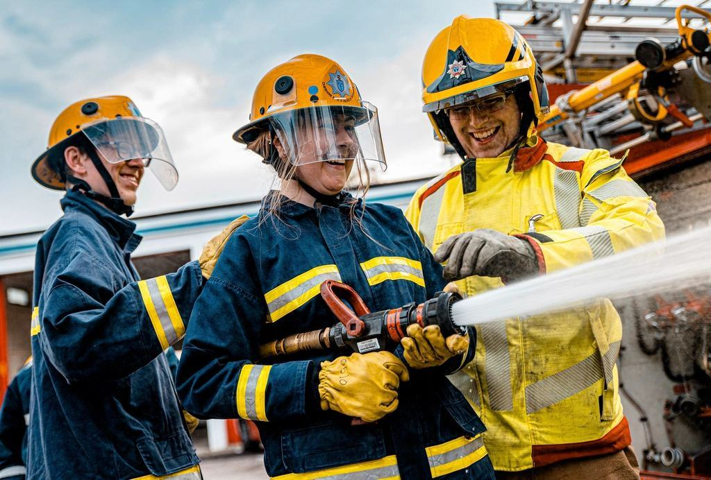

Så fungerar jouren
 Jourcentralen
JourcentralenTelefon som alltid svarar
Fyra operatörer i skift tar emot samtal, skickar närmaste jourbil och för logg över varje ärende.
Läs mer Utryckning Syd
Utryckning SydFem jourbilar i rotation
Tekniker med behörighet att återställa brandlarm och sprinkler. Bilarna är utrustade med reservmunstycken och detektorer.
Läs mer Utryckning Nord
Utryckning NordHöga kusten på 90 minuter
Tre jourbilar med bas i Härnösand sedan 2018, för fastigheter och industri längs E4.
Läs mer Brandvakterna
BrandvakternaBokningsbara med fyra timmars varsel
En pool av tolv brandvakter med certifikat för heta arbeten, som arbetar både dag och natt.
Läs mer
4 lokala bolag – en koncern
Varje bolag drivs lokalt av sina medarbetare, med koncernens styrka i ryggen.
Tillstånd och certifikat
- Service av brandlarmSBSC-certifierad för service och underhåll av brandlarm enligt SBF 110.
- Heta arbetenSamtliga tekniker och brandvakter har giltigt certifikat för heta arbeten från Brandskyddsföreningen.
- Auktoriserat bevakningsföretagTillstånd från Länsstyrelsen Västernorrland för nyckelhantering och rondering.
- ISO 9001 sedan 2014Certifierat ledningssystem för jourverksamhet, nyckelhantering och rapportering.
Det svåraste med vårt jobb är inte natten. Det är att få en kund att förstå att ett larm som går tio gånger om året inte är ett larm som fungerar.
Fastigheter vi har nycklarna till
- Brf Södra Stadsberget
- Medelpads Logistikpark
- Stadsbergens Fastigheter
- Timrå Bruksservice
- Härnösands Skolfastigheter
- Höga Kusten Hotell
- Selånger Handelsplats
Utryckningar och uppdrag
- Pågående

Medelpads Logistikpark
Återställning efter påkört munstycke i höglager – i drift igen på en och en halv timme.
- Utfört

Bruksstopp
Brandvakter i tre skift under tio dygn med 140 tillstånd för heta arbeten.
- Utfört

Härnösands gymnasium
Byte av 22 detektorer i kök och slöjdsalar efter genomgång av två års larmlogg.
- Utfört

Kv. Kajen
Trådlöst larm i ett trähus från 1890-talet under åtta månaders ombyggnad.
- Utfört

Brf Södra Stadsberget
Larmjour och nyckelhantering för 210 lägenheter i fem hus.
- Pågående

Höga Kusten Hotell
Rondering varje timme under tre veckor medan hotellets larmcentral byts.
Teckna jour eller boka brandvakt
Fyll i formuläret så hör vi av oss inom en arbetsdag.
- Telefon
- 070-174 06 52
- E-post
- jour@jourlarm.se
- Öppettider
- Jour dygnet runt. Kontor mån–fre 8–16